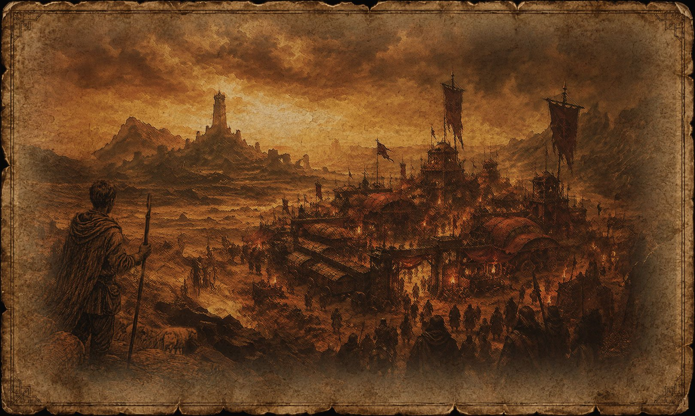

A Torre de Khar-Volun

Onde fica
Além da fronteira norte, passado o último posto que ainda se dá ao trabalho de manter fogo aceso, há uma estrada que a mata consumiu. Ela não aparece nos mapas recentes porque nenhum cartógrafo imperial teve motivo para refazê-la. No fim dessa estrada há uma torre.
Quem serve em Venarium conhece a direção sem precisar de mapa. Aponta-se com o queixo e muda-se de assunto.
O recluso
Khar-Volun vivia ali. O que se sabe publicamente sobre ele caberia em poucas linhas, e é assim há muito tempo: um homem de estudos que escolheu a distância, servido por um punhado de sentinelas, abastecido em intervalos regulares por gente que nunca passava do portão. Não recebia visitas. Não dava explicações. Não cobrava nada de ninguém, e por isso ninguém cobrava nada dele.
Em uma fronteira onde todo poder precisa se anunciar para existir, ele era a exceção incômoda: alguém que estava ali havia tempo demais para ser recente e silêncio demais para ser inofensivo.
O silêncio
Há algum tempo, a torre deixou de responder às próprias sentinelas.
Nenhum exército a cercou. Nenhum incêndio foi visto do vale. Nenhum corpo foi exibido, e nenhuma reivindicação foi feita — e é isso que desconcerta, porque na fronteira quem toma alguma coisa faz questão de dizer que tomou. Os abastecimentos que subiram depois disso voltaram intactos. Caçadores que passaram perto falam de ecos que não correspondem ao terreno. Entre os soldados de Venarium, comenta-se que o sono anda diferente.
Nada disso é prova de coisa alguma. Uma torre pode silenciar porque um homem velho morreu sozinho. É a explicação mais simples, e várias pessoas sensatas a repetem com uma insistência que já chama atenção.
Os que anotam
Desde então, apareceram na região figuras que não disputam terra nem cargo. Caminham entre cidades e fortalezas como escribas do presságio: observam sonhos inquietos, colhem rumores, registram sinais. Chamam-nos de Vigilantes do Vazio.
Não declaram guerra. Não oferecem conselho. Não pedem permissão. Apenas anotam — e o fato de anotarem incomoda mais do que se fizessem qualquer outra coisa.
Por que isso importa agora
Um reino perdeu o rei. Uma torre perdeu o guardião. As duas notícias chegaram quase juntas, e a coincidência não passou despercebida a ninguém que tenha o hábito de procurar sentido nas coisas.
Homens ambiciosos ouviram falar de uma torre sem dono e imaginaram o que costuma haver em torres: ouro, livros, segredos vendáveis. Poucos consideraram a outra possibilidade — a de que certas portas tenham sido fechadas não para proteger o que está fora, mas para conter o que repousa dentro.
“A Torre silenciou, mas alguns ainda sonham com a sombra dela.”
“Ele não guardava tesouro. Guardava porta.” — dito por um batedor bossoniano que depois negou ter dito.
“Os Vigilantes registram nomes antes de seus donos saberem que vão morrer.” — repetido em Karavazyan, sempre por quem ouviu de outro.
“Três expedições subiram a estrada desde o silêncio. Ninguém em Venarium sabe dizer quantas desceram.”